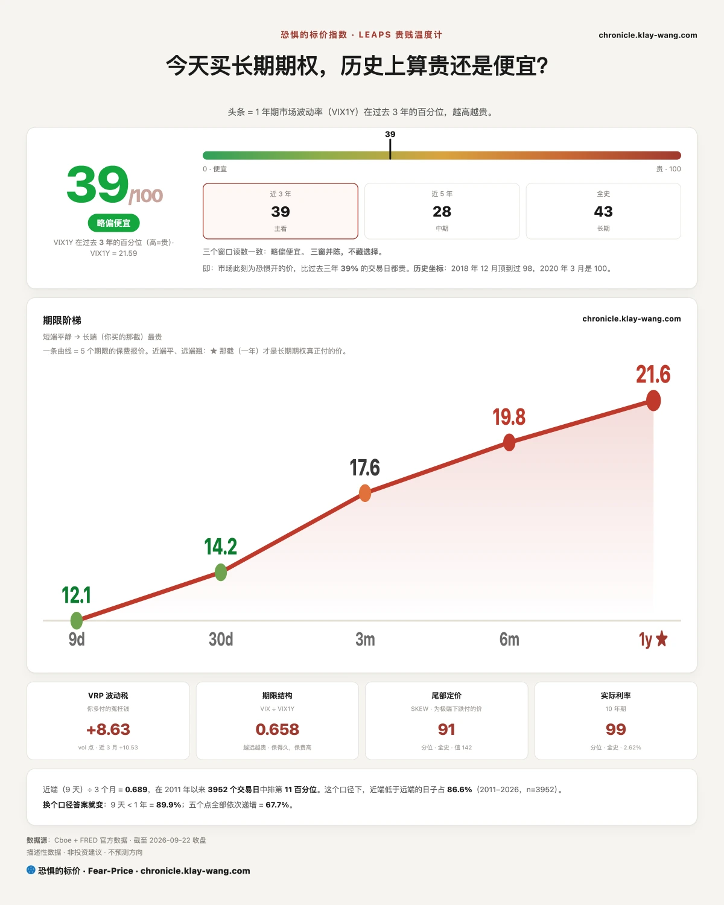
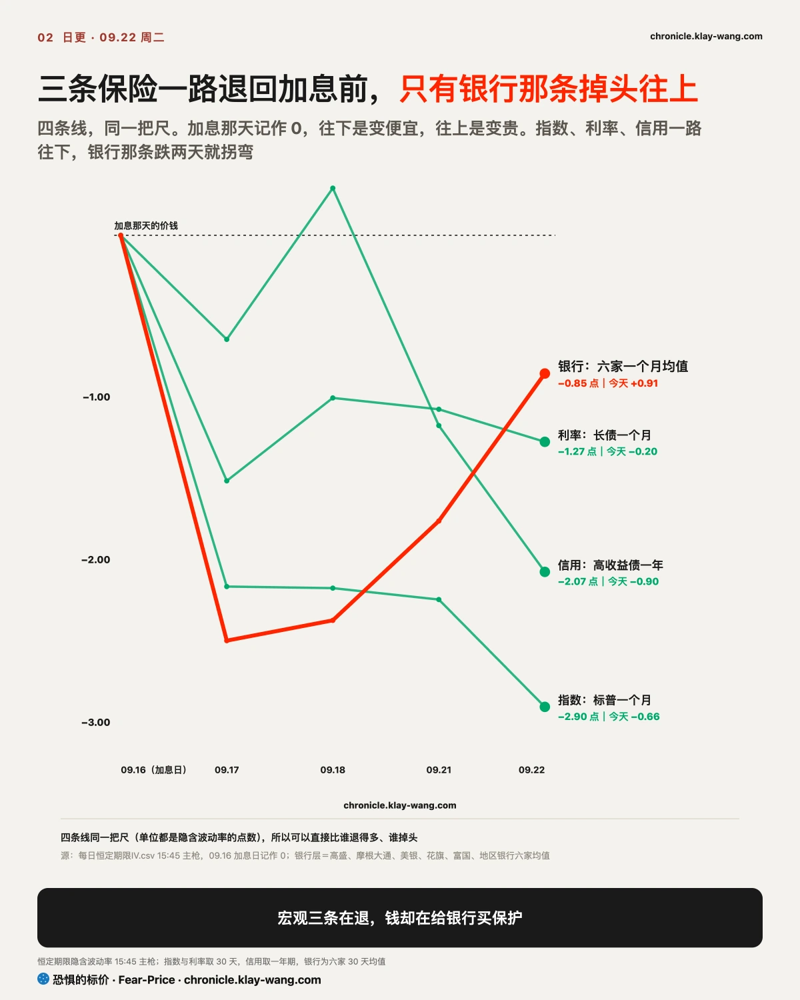
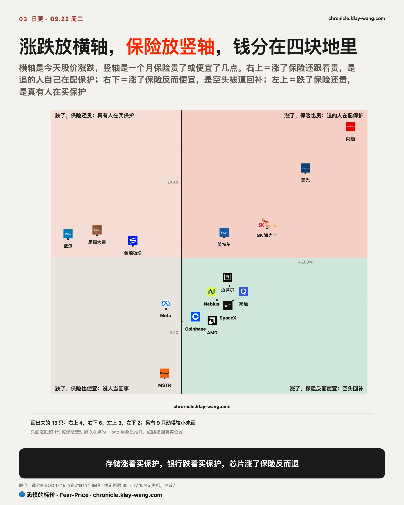
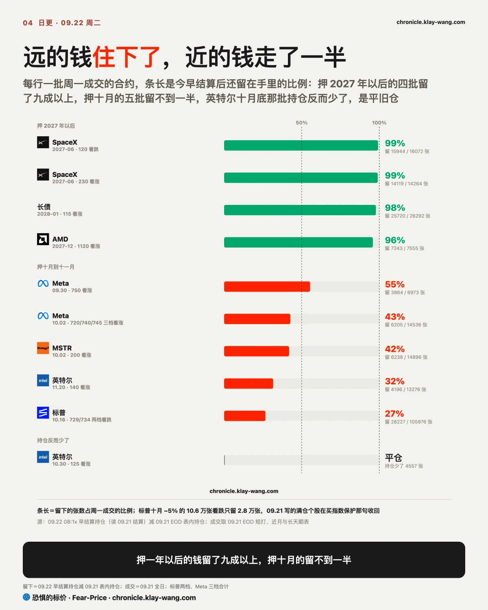
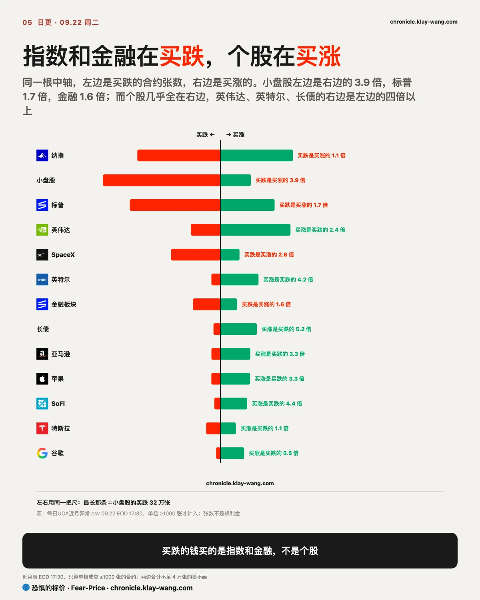
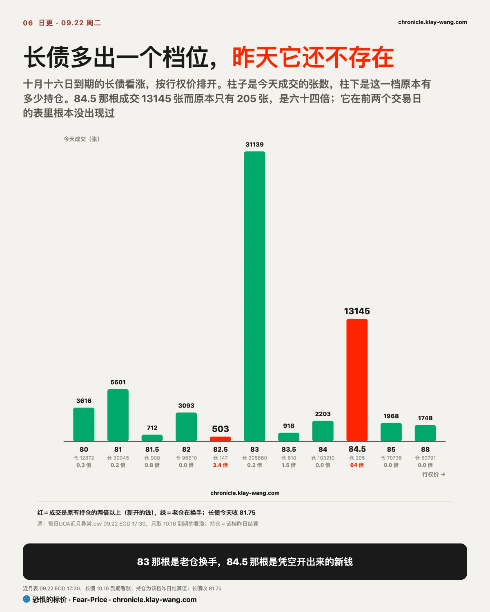
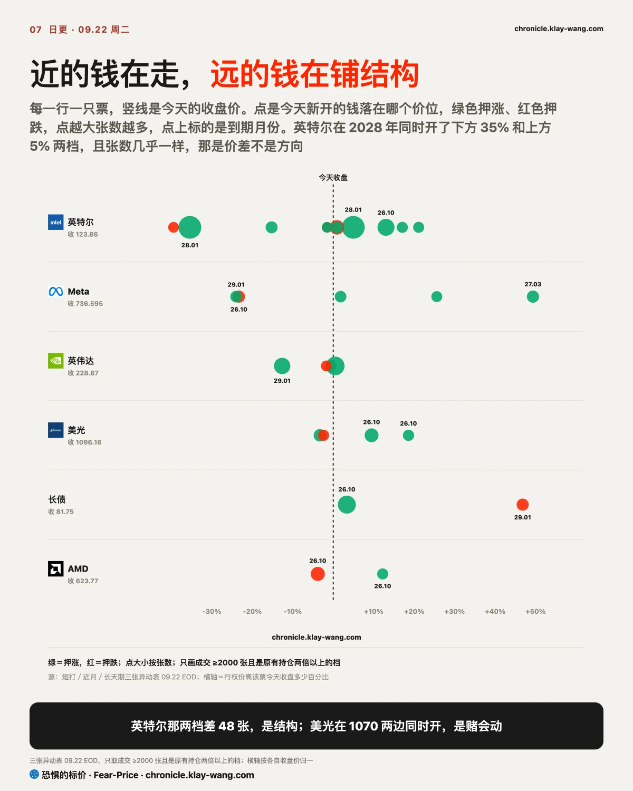

恐惧的标价指数（Fear-Price Index）· 2026-09-22 · 读数 39.0/100：一年期波动率 VIX1Y 为 21.59，处于近三年第 39.0 百分位，高即贵。逐日台账与口径 → chronicle.klay-wang.com · 转载注明：恐惧的标价指数 · Fear-Price
昨天 43.0，今天 39.0，一年期保险又便宜了一档。期限阶梯从九天的 12.13 一路抬到一年的 21.59，九天比一年便宜了九个点还多，期限结构是陡的：近端便宜、远端贵，钱只肯为一年后的风险出价，对眼前这几天几乎不出钱。VIX 14.21，CNN 恐贪 35.3，两个相除的 K 指数 2.481：说担心的人比昨天还多一点，真掏钱买保护的人反而更少，K 要跌破 1 得 VIX 涨过 35。历史在 chronicle.klay-wang.com/kindex，指数自己在 chronicle.klay-wang.com/fear-price。想给整个组合配一年期保护的，今天比昨天又便宜了一点，而且连着便宜四天了。

标普收 773.38，比昨天低 0.12，跌 0.02%。这个数字等于没动，可它盖住了底下一整天的换位：钱从金融退出来，进了存储和芯片。
金融还是最差的一块，板块跌 1.97%，摩根大通跌 3.42%，开盘就跌一路跌到收盘，高盛跌 1.03% 又回到 200 日线下方。上周四我写过一句，便宜的东西这周每天都在更便宜，当时给的看点是一年期保险哪天不涨。到今天还没等到。今天比上周多了一样东西，是量：金融板块成交是昨天的 2.28 倍，摩根大通 1.78 倍。跌一整天还放这么大的量，接的人一直在，卖的人也一整天没停。
被买的是昨天跌得最惨的那一组，形态都是低开高走。闪迪低开 0.52%，自开盘算涨了 7.37%，收涨 6.82%；美光低开 1.06%，自开盘涨 6.13%，收涨 5.00%；SK海力士涨 3.45%。开盘比昨天收盘还低，收盘却涨这么多。涨幅全部来自盘中买盘，跳空那一段反而是往下的。昨天领涨的那三家 CPU 今天是同一种形态，英特尔低开 1.34%、自开盘涨 3.09%、收涨 1.71%，AMD 低开 1.45%、自开盘涨 2.84%、收涨 1.34%，高通涨 2.08%。
把加息那天各层保险的价钱记作零，今天四层走到这里：标普一个月保险比那天便宜 2.90 点，长债便宜 1.27 点，高收益债一年期便宜 2.07 点，三层都在一路往回退。银行六家的一个月保险平均只比那天便宜 0.85 点，而且今天一天就涨了 0.91 点，是四层里唯一往上走的。

具体到每一家：富国一个月保险从 29.74 涨到 31.92，花旗 32.72 到 33.88，美银 26.50 到 27.33，地区银行 23.10 到 23.92，摩根大通 26.35 到 27.11。高盛的一个月没动，但它的一年期从 34.19 涨到 36.15。34.14 是我上周写下的收回线，昨天差 0.05 就碰到了，今天不但没碰到，反而往回走了快两点。我上周说加息这件事股票按一次算、债市按三四次算，中间那道缝落在银行，这条判断今天没有被推翻，方向还走强了。
银行这件事，有人押到了 2027 年。金融板块的 2027 年 3 月 55 看涨成交 38006 张，是持仓的 1.77 倍；同一到期的 54 看跌成交 37768 张，是持仓的 5.15 倍；2027 年 6 月的 75 看涨又 10998 张。同一天、同一个到期、上下两档各三四万张，两边几乎等量，是把一年半以后的银行仓位框进了一个区间。近月还有 11 月 20 日的 50 看跌 19984 张。
银行这边贵的是波动率点数，折成钱反而没怎么动，这一处容易读反。摩根大通一个月保险的点数涨了 0.76，可它股价跌了 3.42%，两边一抵，给 100 股买一个月保险的钱基本和昨天一样。金融板块也是这样，点数涨、钱只贵 0.6%。真正变贵的是高盛的一年期，贵了约 4.6%。
把今天动了的票放进一张图：横轴是涨跌，竖轴是一个月保险贵了还是便宜了。

右上角是涨了保险还跟着贵的，六只，存储三家全在这里。闪迪一天涨 6.82%，它的一个月保险同时从 70.86 涨到 75.29，给 100 股买一个月保护的钱一天贵了约 14%；美光涨 5.00%，保险钱贵约 9.9%。股价涨、保险跟着涨，是买进去的人自己在配保护。空头回补推上去的涨，保险通常会跟着便宜。
左上角是跌了保险还贵的，四只，摩根大通和金融板块在这里，戴尔跌 4.59% 也在这里。跌的时候保险还贵，这一跌里有人在为接下来买保护。
右下角九只，涨了保险反而便宜，昨天领涨的芯片大多落在这里。AMD 涨 1.34% 而保险便宜 2.15 点，高通涨 2.08% 保险便宜 1.42 点。昨天我写过，一个 App 把 CPU 重新定价了。今天是这个故事的第二天，股价还在涨，追的人不再为它多买保护了。英特尔是例外，它的保险今天还在涨，仍是全表最贵的 72.86。
左下角三只，跌了保险也便宜，MSTR 和 Meta 在这里。没人把它们今天的跌当回事。
昨天最热的十批合约，今早的结算持仓把它们劈成两半。押 2027 年以后的四批几乎一张没走，SpaceX 明年 6 月的领口两腿各留 99%，长债 2028 年 1 月留 98%，AMD 2027 年 12 月留 96%；押十月的五批留不到一半，标普那两档只留 27%，Meta 43%，MSTR 42%。
我昨天那句话押的就是近的那一批，栽的也是它。我写满仓个股的人在买最便宜的指数保护，凭的是标普那两档看跌一天成交 10.6 万张，今早只剩 2.8 万张。留下的仍是原有持仓的五倍，指数保护确实有人买，但达不到我说的量级，这句收回。同一天英伟达那条走的是另一个方向，11 月 20 日的 230 看涨只少 1570 张，年底的赌注提前到财报周，这条成立。

再看今天新开的钱。英特尔押到 2028 年 1 月的 130 看涨成交 23605 张，是持仓的 6.29 倍，同一到期的 80 看涨又 23557 张；英伟达 2029 年 1 月的 200 看涨成交 10060 张，持仓只有 274 张。这些是押三年以后的钱，和今天盘面上那点涨跌没关系。下周到期的合约里，10 月 2 日的看涨 3.99 亿美元对看跌 0.61 亿，看跌占 13.3%，比昨天的 8.4% 高了一截。美光一家就占看涨的 1.72 亿，是全场第一，它下周三出财报。

近月那一层今天分得最清楚。小盘股十月中旬的看跌是看涨的 3.9 倍，272、273、274 三档合计 23.6 万张；SpaceX 2.6 倍，标普 1.7 倍，金融 1.6 倍。而个股几乎全在另一边，英伟达的看涨是看跌的 2.4 倍，英特尔 4.2 倍，长债 5.2 倍，博通 19 倍。买跌的钱都压在指数和金融上，个股那边几乎没有。

长债这边有一笔今天最干净的新钱。10 月 16 日到期的 84.5 看涨成交 13145 张，而这一档原本只有 205 张持仓，六十四倍；它在前两个交易日的表里根本没出现过，那两天长债只有 83 和 84 两档在动。同一天 83 那档成交 31139 张更多，可它持仓 20.6 万张，只有 0.2 倍，是老仓在倒手。长债今天收 81.75，84.5 在上方 3.4%。同期利率保险 MOVE 78.56，三年分位 28.4，议息以来最低。利率保险最便宜的时候，有人新开了一个之前没人用的档位。

把今天新开的钱按离收盘多远排开，和昨天正好掉了个头。昨天是近的钱走、远的钱留着；今天近的钱照走，远的钱开始搭结构。英特尔 2028 年 1 月同时开了下方 35% 的 80 看涨 23557 张和上方 5% 的 130 看涨 23605 张，两档差 48 张，上下等量建仓，是价差交易；它 2027 年 6 月还开了 100 和 125 两档看跌。美光在 1070 同时新开看涨和看跌，是跨式，同一个行权价上涨跌都买，押的是动的幅度有多大，它下周三出财报，而它的保险在一年里只算便宜的两成。英伟达 2029 年 1 月的 200 看涨 10060 张对持仓 274 张，它的一个月保险分位只有 1.6，是全表最便宜的。最便宜的保险配最远的赌注。
手里有存储的：闪迪和美光今天是低开被买，而且买的人自己在配保护，一个月保险钱贵了一到一成半。下周三美光财报是这一组的开奖点。这个位置如果是我，要么等财报出来再看留几成，要么趁保险还没贵到离谱先把一半锁住。
手里有银行的：整个板块被成批卖出，量是平时的两倍，而且卖的同时保险在贵、长天期有人上下画边。我上周说的那道缝还在。明天的涨跌不用盯。要盯的是高盛的一年期保险哪天开始往下走。它往下走了，这件事才算过去。
手里是指数基金的：标普一个月保险 11.56，在三年里最便宜的一成里，一年期也连着四天在便宜。指数今天收平，内部换手却很重。保护最便宜的时候就是这种表面平静的日子。